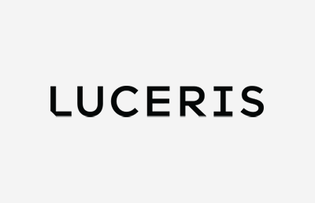
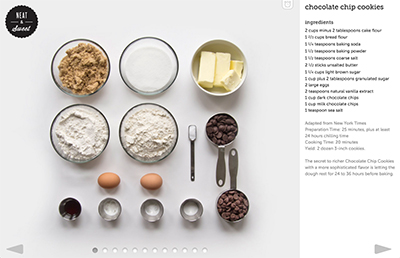
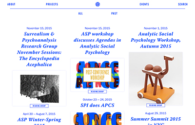

KinHR
Lead Front-End Developer
Kin is an HR Software app focused on people. It helps small businesses manage onboarding, employee data and files, and time off. Site is built using Backbone, Require, JavaScript, HTML5, SCSS, Foundation, and compass.
Visit Site
KinHR Marketing
Developer
Built alternate landing pages for the KinHR marketing site using WordPress. Conducted A/B tests on variations of those pages. Site is built using Wordpress, Foundation, SCSS, and HTML5.
Visit Site

Luceris
Front-End Developer
Luceris is a cloud file storage and collaboration service built specifically to support real estate industry processes. Site built using Angular.js, SCSS, Foundation and Compass.
Visit Site

Neat & Sweet Recipes
Design & Development
A visual guide to recipes featuring a responsive design, built-in-timer, step-by-step navigation, optimized images, and ingredient highlighter. Site developed using HTML5, CSS3, jQuery, JavaScript, PHP and Bootstrap.
Visit Site

SPI
Development
Site featuring projects, upcoming events and resources for The Society for Psychoanalytic Inquiry. Site developed using WordPress, Grunt, Timber, Masonry and SCSS.
Visit Site

SCSS Color Converter
Design/Development
Designed and built this simple tool that outputs a SCSS color function to convert one color to another.
Visit Site